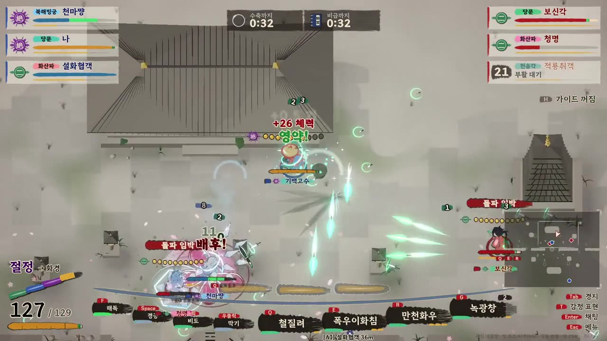

2 · 메인 프로젝트 · 1인 개발
정무대전
여섯 문파 무인이 무작위 맵에서 겨루는 최대 6인 온라인 무협 대전 액션이다. 판 안에서 경지가 오르고, 3대3 · 4인 개인전 · 랭크 대전이 있다.

2.3 구조 한 장
판의 흐름과 체력은 방장이 정하고, 맞았는지는 맞는 쪽이, 투사체가 어디서 출발하는지는 쏘는 쪽이 정한다. 맞는 쪽이 보낸 피해는 방장이 한 번 더 걸러서 체력에 반영한다. 무적 시간을 길게 보고해도 상한 이상은 받지 않는다.
네트워크를 타는 클래스는 협객(Duelist)과 판(DuelGame) 둘뿐이다. 이펙트, 소리, 지형 모습 같은 나머지 코드는 각 PC에서 보이는 것만 맡고, 네트워크 값은 읽기만 한다.
작업을 여러 갈래로 동시에 진행하면서 같은 파일을 고치다 충돌이 나지 않게, 새 기술은 새 partial 파일로 붙였다. 새 파일을 먼저 넣고 기존 코드에서 부르는 건 나중에 하는 순서도 정해 뒀다.
2.4.2 · 기술 사례 · 측정
두 화면에서 다르게 날아간 비도
비도 102번 중 93번 일치 · 개발 빌드 두 개, 편도 지연 60±10ms
되감기를 넣은 뒤에도 비도 일치율이 잴 때마다 38~60%로 달랐다. 창 두 개를 띄우면 포커스 없는 에디터가 49초에 3프레임만 돌았다. 프로파일러로 보니 화면 출력 대기가 1초마다 500ms씩 걸리고 있었다.
에디터에서만 생기는 멈춤이라, 측정을 개발 빌드 두 개로 옮겼다. 실행 인자 하나로 방장 · 손님 · 자동 대전 · 지연 시뮬 · 일치율 기록을 켤 수 있게 만들었다.
- 멈춘 구간만 빼고 분석 → 매번 손으로 골라야 한다
- 에디터 루프 강제 구동 → 멈춤이 0은 아니다
- 개발 빌드 두 개로 측정
숫자가 안정되자 진짜 원인이 보였다. 던지는 사람 화면에서만 비도가 지금 자리에서 출발해 궤적이 최대 0.8m 갈라졌다.
출발점과 방향을 쏘는 사람이 RPC로 보내게 통일해 비도 102번 중 93번이 일치했다. 걸으며 던질 때도 길이 갈라지지 않게, 걸음 속도까지 같이 보내서 모든 화면이 같은 식으로 자리를 셈한다.
나중에 AI 코딩 도구로 폭우연사를 넣었을 때 이 원칙이 깨져 일치율이 76%로 떨어졌다. 같은 측정으로 바로 찾아 89%로 되돌렸다.
AI와 나눈 일 새 기술 구현과 측정 도구 코드는 맡겼고, 판정 원칙 · 측정 방식 · 통과 기준은 직접 정했다.
한계 "화면에서 닿음 → 실제로 맞음"만 센다. 반대 경우와 사람의 실제 움직임은 담기지 않는다.